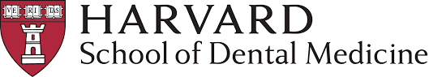
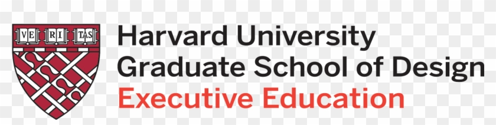

Founded in 1636, Harvard is the oldest institution of higher education in the United States, boasting a rich history that predates the American Revolution. |
The Harvard University logo, a symbol laden with history and significance, is a representation of the institution's commitment to truth and knowledge. The emblem features the iconic shield, proudly displaying the word
"Veritas" - Latin for truth".
The shield is a testament to Harvard's enduring pursuit of truth across centuries.
SymbolismVeritas (Truth): At the core of the emblem, the word "Veritas" is a reminder of Harvard's commitment to the pursuit of truth in all academic endeavors. Design ElementsSHIELD The shield itself is a powerful symbol of protection, indicating the safeguarding of knowledge and truth within the walls of Harvard. COLORS The choice of colors, such as crimson, may have historical significance. Crimson represents courage, determination, and the passion for knowledge. |
HARVARD ENGINEERING |
Harvard John A. Paulson School of Engineering and Applied Sciences offers programs in various engineering disciplines. It emphasizes research-driven education and technological innovation. Harvard John A. Paulson School of Engineering and Applied Sciences pushes the boundaries of technological innovation, preparing students to tackle complex global challenges through interdisciplinary research and engineering excellence. |
|
Delve into the spiritual dimensions of education, where students at the Harvard Divinity School explore the intersection of faith, ethics, and societal impact, preparing to become leaders in religious and humanitarian fields. It prepares students for leadership roles in religious communities, academia, and social justice initiatives. |
HARVARD BUSINESS |
At Harvard Business School, future leaders are shaped through innovative programs, emphasizing leadership, entrepreneurship, and global business perspectives, ensuring graduates are well-equipped for success in the dynamic world of commerce. Harvard Business School offers MBA programs, executive education, and doctoral programs. It focuses on developing leaders who can navigate complex business challenges with strategic thinking and innovation. |
|
Harvard College provides a liberal arts education, offering a broad range of undergraduate programs in the humanities, social sciences, and natural sciences. Harvard, the epitome of academic excellence, offers a diverse range of programs across various disciplines, fostering an environment where intellectual curiosity thrives. |
HARVARD DENTISTRY |
Harvard School of Dental Medicine combines education and research to advance oral health. Students learn clinical skills and engage in cutting-edge research in dentistry and related fields. Harvard School of Dental Medicine pioneers advancements in oral health through cutting-edge research, training the next generation of dentists and dental scientists committed to improving global dental care. |
HARVARD EXECUTIVE DESIGN |
Harvard School of Dental Medicine combines education and research to advance oral health. Students learn clinical skills and engage in cutting-edge research in dentistry and related fields. Harvard School of Dental Medicine pioneers advancements in oral health through cutting-edge research, training the next generation of dentists and dental scientists committed to improving global dental care. |
HARVARD GOVERNMENT PROGRAM |
Harvard School of Dental Medicine combines education and research to advance oral health. Students learn clinical skills and engage in cutting-edge research in dentistry and related fields. Harvard School of Dental Medicine pioneers advancements in oral health through cutting-edge research, training the next generation of dentists and dental scientists committed to improving global dental care. |
HARVARD MEDICAL SCHOOL |
Harvard School of Dental Medicine combines education and research to advance oral health. Students learn clinical skills and engage in cutting-edge research in dentistry and related fields. Harvard School of Dental Medicine pioneers advancements in oral health through cutting-edge research, training the next generation of dentists and dental scientists committed to improving global dental care. |
HARVARD PUBLIC HEALTH |
Harvard School of Dental Medicine combines education and research to advance oral health. Students learn clinical skills and engage in cutting-edge research in dentistry and related fields. Harvard School of Dental Medicine pioneers advancements in oral health through cutting-edge research, training the next generation of dentists and dental scientists committed to improving global dental care. |